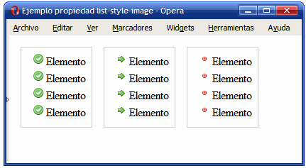

Especifica una imagen para usar como «punto» o viñeta de ítem. Establece o elimina
indentación de ítems sobre la lista. La primera propiedad, list-style-image permite
indicar la URL de una imagen para utilizar de icono o viñeta en cada ítem de la lista.

Bibliografía:
Cómo Crear LISTAS Ordenadas y Desordenadas en HTML [Curso de HTML desde cero].kiko palomares,
Recuperado de youtube el 8 de marzo 2021, https://www.youtube.com/watch?v=1WPK0rmtEbM
ENLACES
Un enlace es un texto (o un objeto, por ejemplo una imagen) sobre el que hacemos
clic para ejecutar una acción, por lo general ir a otra página dentro del mismo sitio web,
página web de Internet, ir a otra parte del mismo documento o también vincular hacia una dirección de correo electrónico.